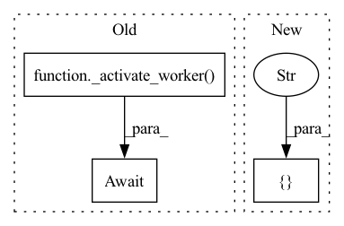

Pattern ID :1050
Before Change
pod.wait_start_success()
for head_port, worker_port in ports:
await _activate_worker( head_port, worker_port)
// remove last comma
pod_addresses = pod_addresses[:-1]
pod_addresses += "}"After Change
head_port = port_generator()
pod_addresses += f""{deployment}": ["0.0.0.0:{head_port}"],"
connection_list_dict = {"0": [f"127.0.0.1:{worker_port}" ]}
head_pod = _create_head_pod(
head_port,
connection_list_dict,In pattern: SUPERPATTERN
Frequency: 3
Non-data size: 3
Instances Fragment ID: 5264068
Project Name: jina-ai/jina
Commit Name: ef662b529b2a2eecea7bb99759a9f7b9d86d3062
Time: 2022-06-08
Author: joan.martinez@jina.ai
File Name: tests/integration/pods/test_pod.py
M Class Name: AnonimousClass
N Class Name: AnonimousClass
M Method Name: test_pods_flow_topology(4)
N Method Name: test_pods_flow_topology(4)
M Parent Class:
N Parent Class:
M File Name: tests/integration/pods/test_pod.py
N File Name: tests/integration/pods/test_pod.py
M Start Line: 142
M End Line: 182
N Start Line: 146
N End Line: 156
Before Change
runtime_processes.append(worker_process)
await asyncio.sleep(0.1)
await _activate_worker( head_port, worker_port)
// remove last comma
pod_addresses = pod_addresses[:-1]
pod_addresses += "}"After Change
// create head
head_port = port_generator()
pod_addresses += f""{pod}": ["0.0.0.0:{head_port}"],"
connection_list_dict = {"0": [f"127.0.0.1:{worker_port}" ]}
head_process = multiprocessing.Process(
target=_create_head_runtime,
args=( Fragment ID: 5264069
Project Name: jina-ai/jina
Commit Name: ef662b529b2a2eecea7bb99759a9f7b9d86d3062
Time: 2022-06-08
Author: joan.martinez@jina.ai
File Name: tests/integration/runtimes/test_runtimes.py
M Class Name: AnonimousClass
N Class Name: AnonimousClass
M Method Name: test_runtimes_flow_topology(4)
N Method Name: test_runtimes_flow_topology(4)
M Parent Class:
N Parent Class:
M File Name: tests/integration/runtimes/test_runtimes.py
N File Name: tests/integration/runtimes/test_runtimes.py
M Start Line: 150
M End Line: 175
N Start Line: 146
N End Line: 157
Before Change
)
pods.append(worker_pod)
await asyncio.sleep(0.1)
await _activate_worker( head_port, worker_port, shard_id=i)
for pod in pods:
pod.wait_start_success()
After Change
)
pods.append(worker_pod)
await asyncio.sleep(0.1)
connection_list_dict[i] = [f"127.0.0.1:{worker_port}" ]
// create head
head_port = port_generator() Fragment ID: 5264070
Project Name: jina-ai/jina
Commit Name: ef662b529b2a2eecea7bb99759a9f7b9d86d3062
Time: 2022-06-08
Author: joan.martinez@jina.ai
File Name: tests/integration/pods/test_pod.py
M Class Name: AnonimousClass
N Class Name: AnonimousClass
M Method Name: test_pods_with_executor(1)
N Method Name: test_pods_with_executor(1)
M Parent Class:
N Parent Class:
M File Name: tests/integration/pods/test_pod.py
N File Name: tests/integration/pods/test_pod.py
M Start Line: 341
M End Line: 364
N Start Line: 324
N End Line: 355